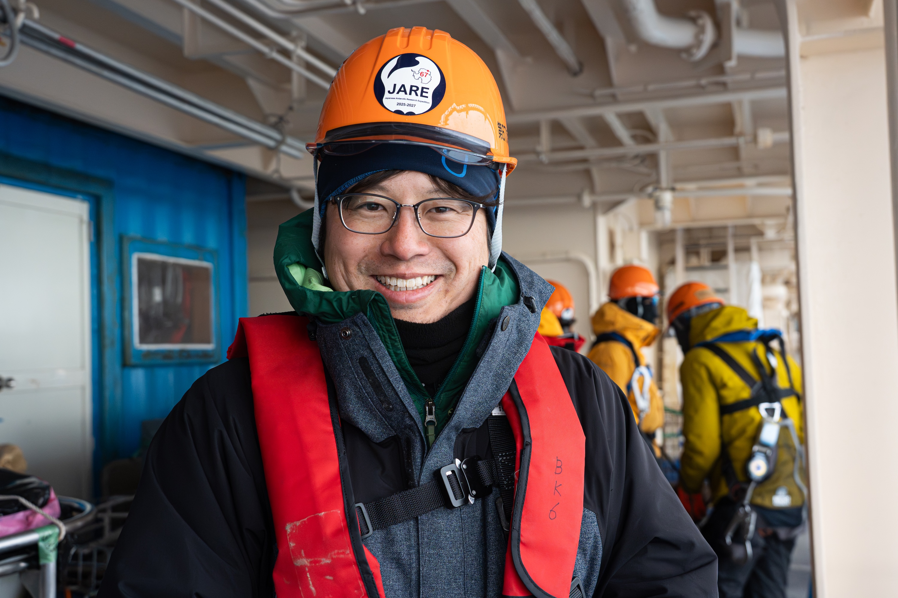

東南極における海洋–海氷–氷床相互作用
東南極域における海洋・海氷・氷床の複雑な相互作用（互いの関わり）を研究しています。最終的には、それらが氷床融解や海洋大循環の変化にどのように影響を及ぼすのかを明らかにします。
- 南極氷床の融解を引き起こす暖水（周極深層水）の分布と循環構造
- 暖水流入による氷床下への海洋熱供給の実態、変動特性とその要因
- 近年の海氷激減が南大洋上層の温暖化や海氷生産量に及ぼす影響
Polar Oceanography · Physical Oceanography
北海道大学 低温科学研究所
水・物質循環部門／大気海洋相互作用分野
准教授
極域海洋学・海洋物理学

海洋物理学的アプローチから、北極・南極域における海洋と氷の相互作用を研究しています。極域では、海洋・海氷・氷床に急激な変化が生じていますが、特に、海洋が氷床や海氷を融かすメカニズム、そして極域特有の水塊形成・変質プロセスおよび海洋循環の解明に力を入れています。
現場観測を研究の核としつつ、数値実験の結果や衛星観測プロダクトも組み合わせることで、現象の多角的・包括的な理解を目指しています。
東南極域における海洋・海氷・氷床の複雑な相互作用（互いの関わり）を研究しています。最終的には、それらが氷床融解や海洋大循環の変化にどのように影響を及ぼすのかを明らかにします。
北極沿岸域に形成される特殊な“ハイブリッドポリニヤ”に注目し、その形成メカニズムと、海氷生産・水塊変質への影響を明らかにします。
北海道大学 低温科学研究所 水・物質循環部門
大気海洋相互作用分野・准教授
Email: hirano.daisuke [at] lowtem.hokudai.ac.jp